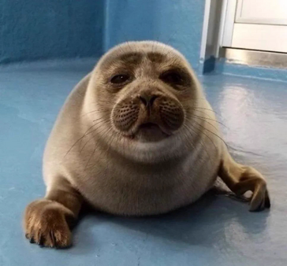

An Introduction to Ringed Seals
The ringed seal (Pusa hispida) is one of the smallest true seals and one of the most widely distributed seals in the Northern Hemisphere. Ringed seals are members of the family Phocidae, the group commonly known as true or earless seals. They are particularly well adapted to cold, ice-covered environments and are found throughout much of the Arctic Ocean and surrounding seas. Populations also occur farther south in areas such as the Bering Sea, the Sea of Okhotsk, the Baltic Sea, and several freshwater lakes. Their name comes from the distinctive light-colored rings and spots that cover their darker coat.
Ringed seals are especially associated with sea ice. They can live among extensive areas of permanent or seasonal ice and are capable of maintaining breathing holes through the ice. This allows them to occupy frozen environments where many other marine animals have difficulty accessing the surface. Their dependence on ice makes them particularly interesting animals to study because their habitat, reproduction, and daily activities are closely connected to seasonal changes in ice conditions.
Appearance and Physical Characteristics
Ringed seals are relatively small compared with many other true seals. Their most recognizable feature is the pattern of light-colored rings surrounding darker spots on their coat. These markings give the species its common name and help distinguish it from other northern seals.
Their small size is particularly useful in understanding their relationship with several other members of the genus Pusa. The ringed seal is closely related to the Caspian seal and the Baikal seal, and these animals share characteristics including relatively small body sizes and adaptations associated with cold environments and ice.
Ringed Seals and Baikal Seals
One of the most interesting connections in the story of ringed seals is their relationship with the Baikal seal (Pusa sibirica).

The Baikal seal is not a ringed seal subspecies; instead, it is a separate species of true seal that lives exclusively in Lake Baikal in Siberia, Russia. However, genetic, anatomical, and evolutionary evidence places the Baikal seal close to ringed seals and the Caspian seal. The structure of the Baikal seal's skull and other morphological characteristics suggest that its ancestors were related to Arctic ringed seals. Scientists estimate that Baikal seals have inhabited Lake Baikal for roughly two million years.Baikal seals have developed characteristics suited to their unusual environment. They can dive to depths of approximately 400 meters (1,300 feet) and remain underwater for more than 40 minutes under some circumstances. Their primary food source is the golomyanka, a fish found only in Lake Baikal, although they also eat other fish and aquatic invertebrates. During winter, they live beneath the lake's ice and maintain breathing holes, much as Arctic ringed seals maintain breathing holes in sea ice.